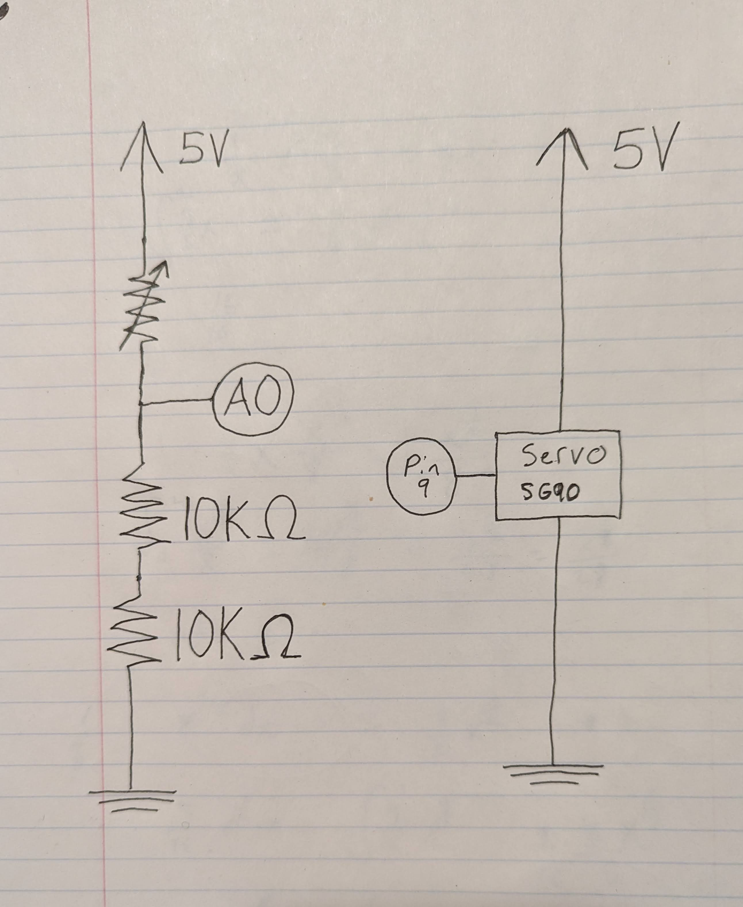
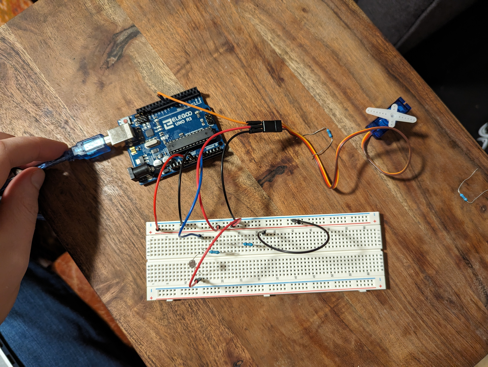

Sam's Assignment 4!

A4 displays a reading from a humidity sensor!
Code
#include // add dht lib
#include // add sevseg lib
SevSeg sevseg; // create sevseg obj
dht DHT; // create dht obj
#define DHT11_PIN A0 // set dht pin to read
int hum = 0; // humidity
int sense = 0; // holds sensor data
byte numDigits = 4; // set hardware to 4 digit
byte digitPins[] = {0, 0, 5, 4}; // set digital pins for each digit
byte segmentPins[] = {11, 13, 9, 7, 6, 12, 10, 8}; // sets power pins for each segment
bool resistorsOnSegments = false; // resistors on digital pins
unsigned long previousMillis = 0; // last time interval
const long interval = 10000; // refresh period
void setup() {
sevseg.begin(COMMON_CATHODE, numDigits, digitPins, segmentPins, resistorsOnSegments); // passes settings for sevseg setup
sevseg.setBrightness(90); // brightness
sevseg.setNumber(88,0); // displays 88 until first reading
}
void loop() {
long currentMillis = millis(); current time
if (currentMillis - previousMillis >= interval) { // opens every 10 seconds
previousMillis = currentMillis; // set new previous time to current
sense = DHT.read11(DHT11_PIN); // reads sensor
sevseg.setNumber(DHT.humidity,0); // sets display to sensor reading
}
sevseg.refreshDisplay(); // refresh display
}
}
Schematic

Breadboard

Questions
2: Draw a graph where the x-axis is time and the y-axis is voltage. Plot the voltage at V-measure of your voltage divider of your shared gif.

3: AnalogWrite and analogRead are respectively 8-bit and 10-bit values. Imagine you had 10-bit PWM and a 16-bit analog-to-digital converter instead. How would this
change your map() code? Explain your answer.
10-bit has 1024 (2^10) values and 16-bit has 65536 (2^16) values. The function would therfore look like: map(PMWvalue, 0, 1023, 0, 65535). This would 10-bit to 16-bit linearly.